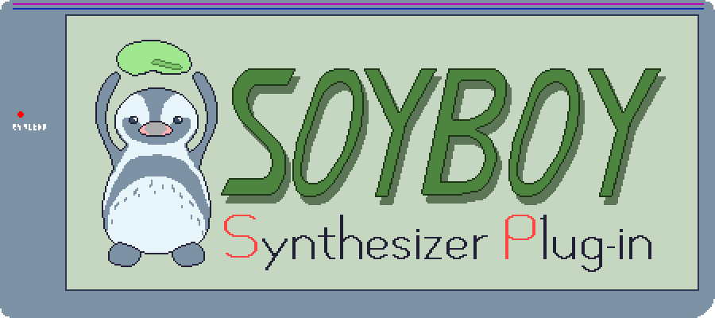

Overview
SoyBoy SP is a VST3 instrument plugin to generate some GameBoy-like sounds. It is originally intended to do GameBoy-like chiptunes on my GNU/Linux PC.
Features
- Three oscillator modes (square wave, noise, wavetable)
- A 32-samples 4bit wavetable oscillator
- A linear envelope generator
- A frequency sweeping to bend the pitch automatically
- A stutter, it's like a note delay
Additionally, SoyBoy SP has these features:
- Can be polyphonic; you can choose a number of voices (1 ~ 6)
- Pitch bending with MPE (MIDI Polyphonic Expression)
Screenshots
Edamame
Edamame is the Humboldt penguin living in Tobu Zoo. Here is his childhood's photo.
How to install
TBDHow to use
TBDHow to report bugs
If you find any bugs, report from this page.
About this plugin
- Author
- t-sin
- License
- SoyBoy SP is licensed under the GPL v3.0.
- The source code
- Its repository on GitHub.